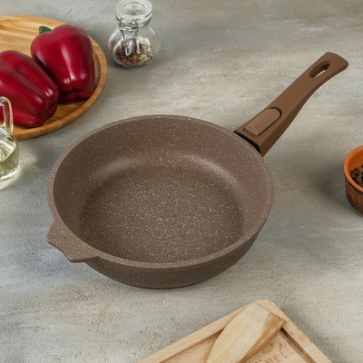

Это технологичная кухня!
Кухонный нож — нож, который предназначен для использования в приготовлении пищи. Бывают универсальными, выполняющими множество разных задач (деление, измельчение, намазывание, срезание кожицы с овощей) или специализированными (нож для раскрывания раковин устриц).
Планетарный миксер - это незаменимый помощник на кухне, который помогает не только создавать кулинарные шедевры, но и экономит время. При выборе миксера стоит учитывать различные ситуации и области применения, такие как профессиональное использование, домашнее использование и специфические потребности в насадках.
Сковорода антипригарная

Антипригарное покрытие — покрытие, предназначенное уменьшить прилипание к защищаемой им поверхности. Антипригарное покрытие на посуде — основная ниша использования антипригарных покрытий, позволяет обжаривать продукты без какого-либо прилипания в процессе жарки. Антипригарные покрытия часто называют «тефлоновым покрытием», так как основной материал таких покрытий — политетрафторэтилен, торговая марка которого — «Тефлон». По составу также могут состоять не из силиконов, а анодированного алюминия, керамики.